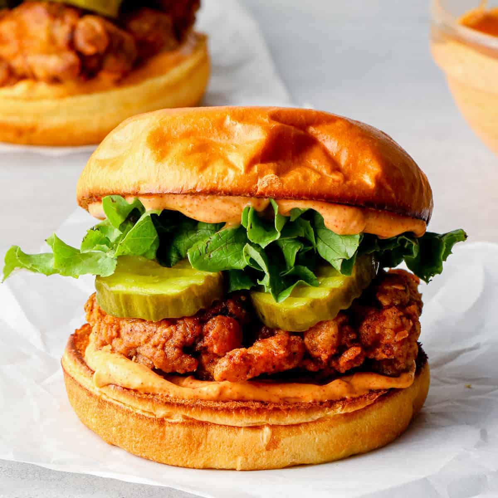

A fried chicken sandwich is a crispy, flavorful, and satisfying dish featuring a golden-brown, deep-fried chicken fillet served between a soft bun. The chicken is typically marinated in buttermilk for tenderness, coated in a seasoned flour or batter, and fried to a crispy perfection. The sandwich is often complemented with crisp lettuce, pickles, mayonnaise, or a spicy sauce, adding layers of texture and flavor. Variations include spicy chicken sandwiches, Nashville hot chicken, or honey butter chicken. It's a popular fast-food and homemade favorite, balancing crunch, juiciness, and bold seasoning in every bite!